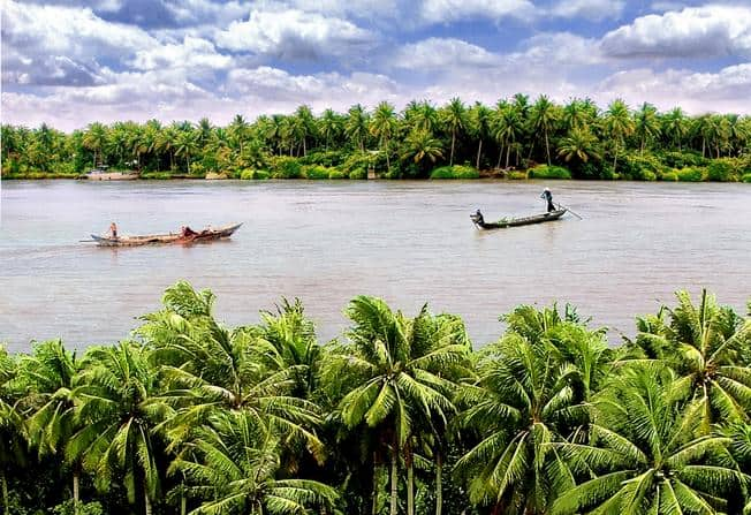
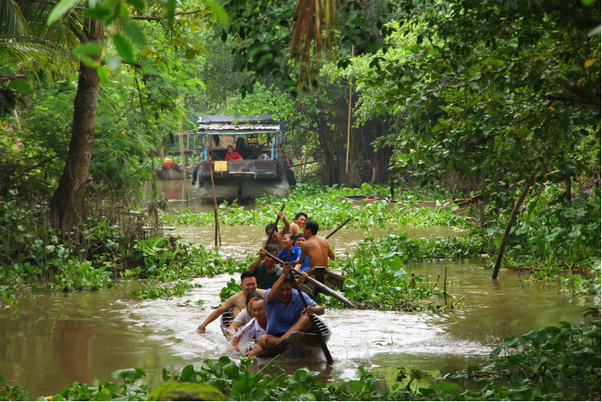
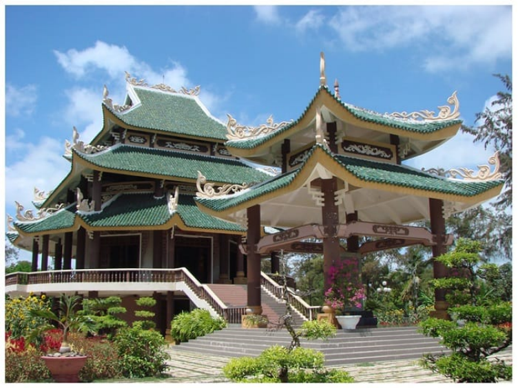

WIKI VIỆT NAM

Bến Tre, miền quê bình yên rợp bóng dừa xanh là một trong những địa điểm lý tưởng cho những ai muốn cảm nhận sự thư thái, rời xa phồn hoa đô thị về với vùng đất miệt vườn. Cùng khám phá những điểm tham quan nổi tiếng nhất mà đã đến Bến Tre là phải đi cho bằng được dưới đây nhé!
Nằm dọc theo con sông Tiền và cách trung tâm thành phố Bến Tre 23km là Cồn Quy. Đây là một trong những điểm đến nổi tiếng nhất khi nhắc đến Bến Tre bởi không gian sông nước hữu tình và những làn điệu đờn ca tài tử Nam Bộ ngọt ngào. Đến với Cồn Quy, bạn được sống trong một không gian yên bình, chưa hề xuất hiện dấu tích đô thị hóa, khí hậu vô cùng ôn hòa.
Khung cảnh khu Cồn Quy (Ảnh: ST)
Ngoài ra, du khách cũng được thưởng thức trái cây cực ngon ngay tại những khu vườn nhãn, vườn cam, vườn bưởi,… được uống tách trà mật ong khói bốc lên nhẹ nhàng và thưởng thức giai điệu đờn ca tài tử đã được UNESCO công nhận là Di sản văn hóa Phi vật thể của nhân loại.
Chèo thuyền ngắm cảnh tại địa điểm du lịch Bến Tre này (Ảnh: ST)
Ngồi trên những chiếc thuyền lênh đênh sông nước ngắm nhìn cây cối trù phú, xanh tươi và yên bình ở miền Tây là một trong những trải nghiệm mà có lẽ ai cũng muốn thử một lần trong đời. Cồn Quy chắc chắn là một trong những dấu ấn mạnh mẽ nhất còn đọng lại trong tâm trí bạn sau khi rời Bến Tre.
Địa chỉ: xã Tân Thạch và Quới Sơn, huyện Châu Thành, tỉnh Bến Tre, Việt Nam.
Được bình chọn là khu du lịch tiêu biểu ở Đồng bằng sông Cửu Long, Cồn Phụng được thiết kế theo lối kiến trúc mở và hòa mình vào thiên nhiên. Cồn Phụng được ví như một ốc đảo xanh nổi trên Sông Tiền mà đến đây bạn sẽ được khám phá cuộc sống miệt vườn dân dã của người dân nơi đây.
Toàn cảnh khu du lịch Cồn Phụng (Ảnh: ST)
Ngoài ra, bạn cũng có thể trải nghiệm thú vui câu cá, be mương bắt cá, chèo thuyền, tắm sông, đi xe ngựa, tham quan những miệt vườn trái cây và chiêm ngưỡng sức hút dân dã của miền đất Tứ Linh. Bên cạnh đó, Cồn Phụng còn sở hữu khu di tích Đạo Dừa rộng khoảng 1.500 m² cũng là địa điểm được nhiều du khách đến tham quan. Tham khảo các khách sạn huyện Châu Thành giá rẻ.
Những hoạt động vui chơi, giải trí tại Cồn Phụng Bến Tre (Ảnh: ST)
Khu lăng mộ cụ Nguyễn Đình Chiểu nằm ở xã An Đức, huyện Ba Tri, tỉnh Bến Tre. Nơi yên nghỉ của người con yêu nước được xây dựng khá hoành tráng để thể hiện lòng tôn kính mà người dân Bến Tre dành cho nhà thơ lớn, người yêu nước và vị thầy thuốc đáng kính của dân tộc ta.
Khu đền thờ Lăng mộ Nguyễn Đình Chiểu Bến Tre
Tại nơi đây, vào ngày 1 tháng 7 hàng năm sẽ là lễ hội truyền thống nhằm mục đích tưởng nhớ cụ Nguyễn Đình Chiểu. Người dân Bến Tre càng tự hào hơn khi khu lăng mộ đã được đón nhận Bằng xếp hạng Khu di tích Quốc gia đặc biệt vào năm nay.
Vào mùa lễ hội, bạn sẽ được tham gia nhiều hoạt động khá vui nhộn như hóa trang Lục Vân Tiên – Kiều Nguyệt Nga, hội thi mâm cơm ngày giỗ, mâm xôi ngày hội, thi đấu cờ tướng, đẩy gậy, kéo co, nhảy bao bố….
This site was created with the Nicepage